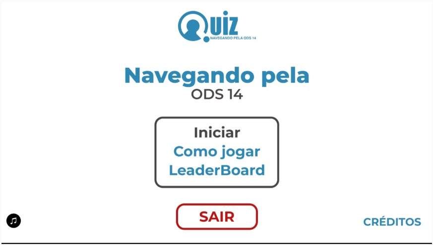
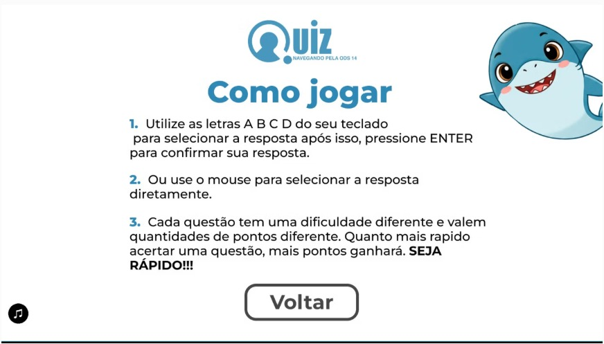
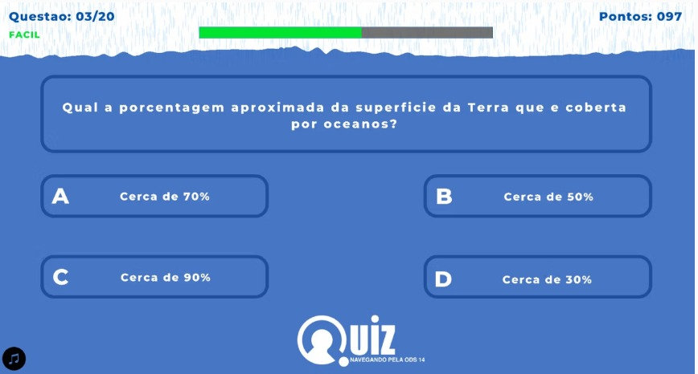
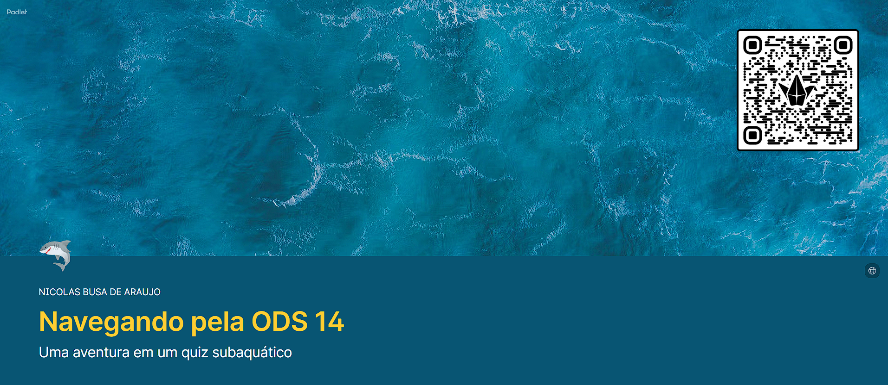

Portfólio Educacional · 2026
Uma jornada visual criada com Inteligência Artificial para educar, engajar e inspirar a consciência ambiental marinha nas escolas brasileiras.
01 — Objetivo
Este projeto tem como objetivo conscientizar estudantes sobre a importância da conservação dos oceanos e o cumprimento da ODS 14 (Vida na Água) da ONU, de forma divertida, interativa e memorável — transformando conteúdo importante em jogo.
A visita à escola tem como objetivo específico apresentar o Quiz ODS 14, realizar uma sessão interativa onde os alunos possam jogar e aprender, conectando o ambiente escolar aos desafios globais de sustentabilidade.
Levar o tema da conservação dos oceanos e da Vida na Água para as escolas de forma divertida, interativa e memorável — acreditando que educação de qualidade passa pela experiência, não só pela informação.
Mensagem central: "Educar sobre o oceano é educar sobre o futuro."
02 — Descrição
O Quiz ODS 14 – Navegando pela Vida na Água é um jogo educativo interativo desenvolvido por estudantes do Instituto Federal de São Paulo (IFSP) como projeto de extensão universitária, com o objetivo de conscientizar estudantes sobre a importância da conservação dos oceanos e o cumprimento da ODS 14.
O jogo conta com 20 perguntas distribuídas em 3 níveis de dificuldade, atendendo estudantes do Ensino Médio durante uma visita escolar de 50 minutos, conduzida por uma equipe de 10 integrantes do IFSP.



03 — ODS 14
O projeto "Navegando pela ODS 14" foca na proteção dos ecossistemas marinhos, utilizando a gamificação para abordar metas críticas da Agenda 2030 da ONU.
Conscientização sobre o impacto dos detritos marinhos e a poluição por nutrientes, focando especialmente na redução de resíduos plásticos nos oceanos.
Abordagem sobre a gestão sustentável e a proteção da biodiversidade costeira para evitar impactos adversos significativos e restaurar a saúde dos oceanos.
Educação sobre os efeitos da absorção de CO2 pelas águas, que altera o pH oceânico e ameaça a vida de corais, moluscos e diversos microrganismos.
Aumento do conhecimento científico e transferência de tecnologia marinha, utilizando o desenvolvimento de software (C/Raylib) como ferramenta de disseminação.
04 — BNCC
O projeto “Quiz ODS 14 – Navegando pela Vida na Água” possui forte relação com a BNCC (Base Nacional Comum Curricular), pois promove aprendizagem interdisciplinar, consciência socioambiental, pensamento crítico e uso da tecnologia na educação. O jogo educativo busca conscientizar os alunos sobre a conservação dos oceanos e a sustentabilidade, utilizando uma abordagem interativa e lúdica.
EF09CI13 — Compreender os impactos da poluição nos oceanos, reconhecendo a importância da preservação da biodiversidade marinha e das ações sustentáveis para a conservação da vida aquática.
O projeto estimula a compreensão sobre a biodiversidade marinha, os ecossistemas aquáticos e os impactos causados pela poluição e pelas ações humanas nos oceanos, promovendo a conscientização ambiental e a preservação da vida marinha.
EM13LGG704 — Utilizar tecnologias digitais, programação e recursos interativos como ferramentas para aprendizagem, comunicação e conscientização sobre temas socioambientais.
Competência Geral 1 e 2 — Valorizar os conhecimentos científicos e estimular a curiosidade intelectual, a investigação e o pensamento crítico para compreender questões ambientais relacionadas à conservação da vida marinha.
Competência Geral 5 — Utilizar tecnologias digitais de forma crítica, significativa e criativa, por meio da interação com o jogo educativo, do sistema online e da gamificação aplicada à aprendizagem.
Competência Geral 10 — Desenvolver consciência socioambiental, promovendo atitudes responsáveis, sustentáveis e éticas voltadas à preservação dos oceanos e ao cuidado com o meio ambiente.
05 — Galeria
Registros das etapas de criação, cartaz produzido e momentos de apresentação.

06 — Demonstração
Assista ao vídeo de divulgação do Quiz ODS 14, iniciativa desenvolvida por estudantes do IFSP com o objetivo de promover a conscientização sobre a preservação da Vida na Água de forma educativa e acessível.
O vídeo apresenta a proposta do projeto, sua importância dentro das metas globais da ONU para um futuro sustentável e como a tecnologia pode ser utilizada para incentivar o aprendizado e o engajamento em temas ambientais.